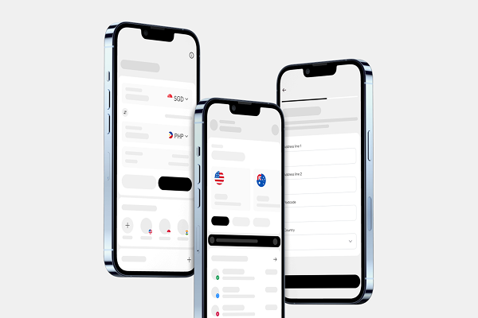

Unifying four systems into one
A design revamp that brought the company's consumer app, consumer web, business solutions, and marketing websites under a single cohesive design system — reducing redundancy and strengthening brand identity.
Confidential information and images have been redacted.

Four separate systems, four times the maintenance
The company's design ecosystem was highly fragmented. Designers across the consumer app, consumer web, business solutions, and marketing websites each worked with different design languages, tones of voice, and component libraries.
Operational inefficiency
4 separate design systems meant every team was recreating similar components independently, wasting time and creating drift.
Brand inconsistency
Different visual treatments across products eroded brand identity and created jarring experiences for users moving between platforms.
This project is still under development. Confidential information has been redacted from all images shown.
From audit to architecture to a unified system
Insert image — Bento grid system and IA mapping
One system. Every platform.
A unified design system that harmonises branding, tone, and user flows across the consumer app, business solutions, and marketing websites. Built to scale across web and mobile using reusable assets and the flexible Bento framework.